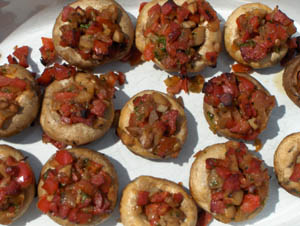

Champiñones rellenos - gevulde champignons
Ingrediënten (voor 4 personen)
- 16 grote champignons
- 2 uien
- 1 kleine rode paprika
- peterselie
- 3 teentjes knoflook
- 250 g chorizo
- zwarte peper
- olijfolie
- zout
Bereiding
- Maak de champignons schoon, verwijder de stelen en snijd deze fijn. Zet de 'hoedjes'apart.
- Snij de ui en paprika fijn en bak in een koekenpan met olie eerst de ui en voeg dan de paprika toe.
Als dit zo goed als gaar is voeg dan de fijngesneden champignonstelen toe en bak mee totdat
het grootste deel van het vocht verdampt is. - Verwijder het vel van de chorizo en snij de worst in stukjes. Meng dit door het groentenmengsel. Voeg hier tevens de knoflook (fijngesneden, geperst of gevijzeld) aan toe. Bak dit op laag vuur gedurende ca. 8 minuten.
- Snij de peterselie zeer fijn en voeg dit toe aan het mengsel. Eventueel op smaak brengen met zout en peper.
- Vul de champignonhoedjes met het mengsel en zet ze in een vuurvaste schaal.
- Zet de schaal in een voorverwarmde oven van 175°-200°C en bak dit tot de champignons gaar zijn (ongeveer 5-10 minuten). Serveer warm. Je kunt het ook grillen op de barbecue.